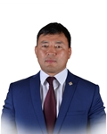

Member of the State Great Khural of Mongolia
Sukhbat Agvaansamdan
Member of the State Great Khural of Mongolia SUKHBAT Agvaansamdan
Mongolian People's Party
Education, graduated schools, education degree:
1987 Middle school in Tur Khurakh, Tuv aimag
1987 Construction college
1994 BA at National Physical Education University
2015 Public Administration and Management, Mongolian Academy of Management
Working experience:
1991 - 1994 Athlete, youth freestyle wrestling team
1994 - 1995 Trainer, National Physical Education University
1994 - 1998 Athlete, national freestyle wrestling team
1994 - 1995 Athlete, Gobi company
1996 - 2000 Athlete, Buyan company
2001 - 2005 Athlete, Bishrelt holding company
2006 Founder, “Golden Food” group
2007 Founder, “Olympic” special school to produce high-level athletes
2016 Member of the State Great Hural (Parliament) of Mongolia
Awards:
2005 Merited Athlete